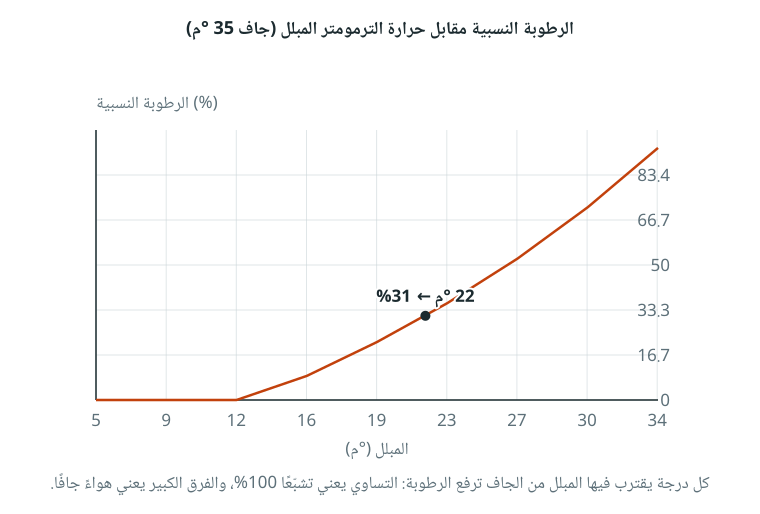

ميزان الحرارة المبلل: كيف نعرف رطوبة الهواء بلا جهاز؟
حرّك حرارة المبلل مقابل جاف 35 °م. محاكاة تعليمية لا قياس فيزيائي حقيقي.
محاكاة تعليمية لا قياس فيزيائي حقيقي: الأرقام تُحسب من النموذج لحظيًا، ولا تُقاس بأدوات منزلية.
افتراضات النموذج والمصدر
e = es(Tw) − 0.00066·(1+0.00115·Tw)·P·(Td−Tw) ، RH = e/es(Td)
ضغط جوّي 101.3 ك.ب
تهوية كافية حول القماش
صيغة سبرونغ التقريبية
Psychrometrics — relative humidity and wet bulb — Wikipedia
Relative humidity — dry and wet bulb calculation — The Engineering ToolBox
علّق قماشًا قطنيًا مبللًا على بصلة ترمومتر، واتركه في مهب مروحة صغيرة، واقرأ الترمومتر الثاني جافًا. الترمومتر المبلل يقرأ أقل دائمًا، والفرق بين القراءتين هو مقياس جفاف الهواء: فرق كبير يعني هواءً جافًا يسرّع التبخر.
الحساب يبدأ من ضغط البخار المشبع عند حرارة المبلل، ثم يُخصم منه تبريد التبخر المتناسب مع فرق الحرارة، فنحصل على الضغط الجزئي للبخار في الهواء. نسبة هذا الضغط إلى المشبع عند حرارة الجاف هي الرطوبة النسبية. مثال: جاف 35 °م ومبلل 22 °م يعطيان رطوبة نحو 34% — هواء صحراوي جاف.
ما لا يُقاس منزليًا: الضغط الجزئي مباشرة. الأجهزة الإلكترونية تقيسه ببوليمر يتغير مقدار مقاومته مع البخار، والميزان المبلل يقيسه بطريقة غير مباشرة — وكلاهما تقدير له خطأ عند الرياح القوية أو الغبار.
كيف تعمل الظاهرة؟
الترمومتر المبلل يفقد حرارة بالتبخر بمعدل يتناسب مع «جفاف» الهواء، فيستقر عند حرارة أقل من الجاف. عندما يكون الهواء مشبعًا (100%) لا يتبخر شيء وتتساوى القراءتان.
العلاقة بالأرقام
e = es(Tw) − 0.00066·(1+0.00115·Tw)·P·(Td−Tw). جاف 35 ومبلل 22: es(22)=2.64 ك.ب، e=1.75 ك.ب، es(35)=5.62 ك.ب ⇒ RH=31%. الفرق بين 2.64 و1.75 ك.ب هو مقدار تبريد التبخر الذي دفع الحرارة من الجاف إلى المبلل.
مفاهيم متقاربة
يُخلط بين «الرطوبة النسبية» و«الرطوبة المطلقة»: النسبية تعتمد على الحرارة (نفس كمية البخار تعطي رطوبة نسبية مختلفة في يوم بارد وآخر حار)، والمطلقة تقيس الكتلة في الحجم.
حدود التطبيق
الصيغة التقريبية تفترض ضغطًا جوّيًا قياسيًا وتهوية كافية حول القماش. عند سرعة هواء منخفضة يقرأ المبلل أعلى من الحقيقة، وعند ماء ملوّث أو قماش سميك يتغير معامل التبخر.

| الكمية | القيمة | المصدر |
|---|---|---|
| الرطوبة عند 35/22 °م | 31 % | [1] |
| البخار المشبع عند 35 °م | 5.62 ك.ب | [1] |
| الحرارة الكامنة للتبخر | 2260 kJ/kg | [2] |
المصادر
- 1 Psychrometrics — relative humidity and wet bulb — Wikipedia. en.wikipedia.org/wiki/Psychrometrics · اطُّلع عليه 2026-11-19
- 2 Relative humidity — dry and wet bulb calculation — The Engineering ToolBox. www.engineeringtoolbox.com/relative-humidity-air-d_687.html · اطُّلع عليه 2026-11-19
راجعه: عبدالله الهويدي — مراجعة في تطبيق انفراد · 2026-11-19 · آخر تحديث 2026-11-19
رجوع إلى المعمل